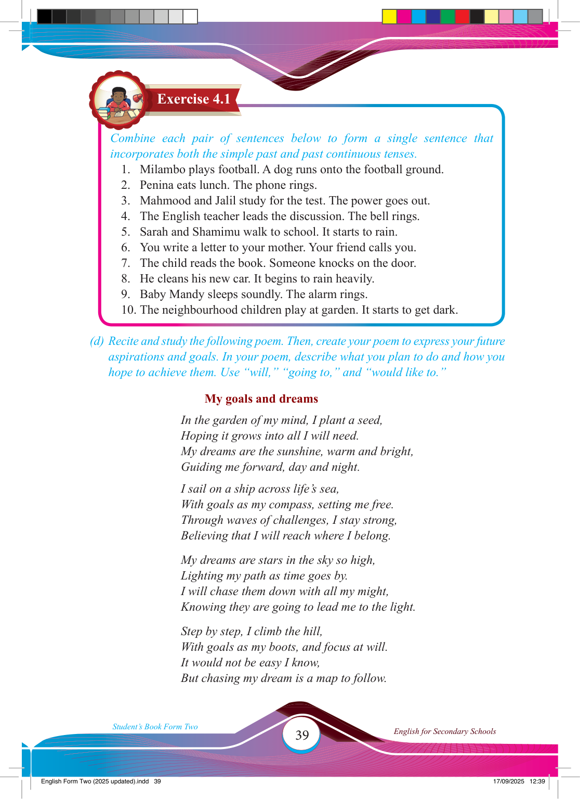

39
Student’s Book Form Two
English for Secondary Schools
Exercise 4.1
Combine each pair of sentences below to form a single sentence that incorporates both the simple past and past continuous tenses.
1. Milambo plays football. A dog runs onto the football ground.
2. Penina eats lunch. The phone rings.
3. Mahmood and Jalil study for the test. The power goes out.
4. The English teacher leads the discussion. The bell rings.
5. Sarah and Shamimu walk to school. It starts to rain.
6. You write a letter to your mother. Your friend calls you.
7. The child reads the book. Someone knocks on the door.
8. He cleans his new car. It begins to rain heavily.
9. Baby Mandy sleeps soundly. The alarm rings.
10. The neighbourhood children play at garden. It starts to get dark.
(d) Recite and study the following poem. Then, create your poem to express your future aspirations and goals. In your poem, describe what you plan to do and how you hope to achieve them. Use “will,” “going to,” and “would like to.”
My goals and dreams
In the garden of my mind, I plant a seed,
Hoping it grows into all I will need.
My dreams are the sunshine, warm and bright,
Guiding me forward, day and night.
I sail on a ship across life’s sea,
With goals as my compass, setting me free.
Through waves of challenges, I stay strong,
Believing that I will reach where I belong.
My dreams are stars in the sky so high,
Lighting my path as time goes by.
I will chase them down with all my might,
Knowing they are going to lead me to the light.
Step by step, I climb the hill,
With goals as my boots, and focus at will.
It would not be easy I know,
But chasing my dream is a map to follow.
17/09/2025 12:39